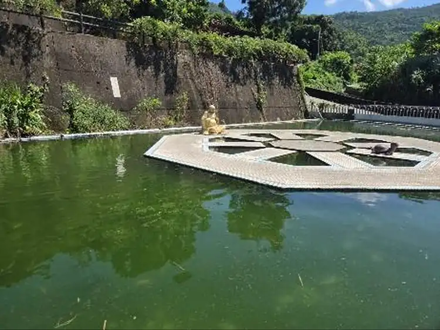
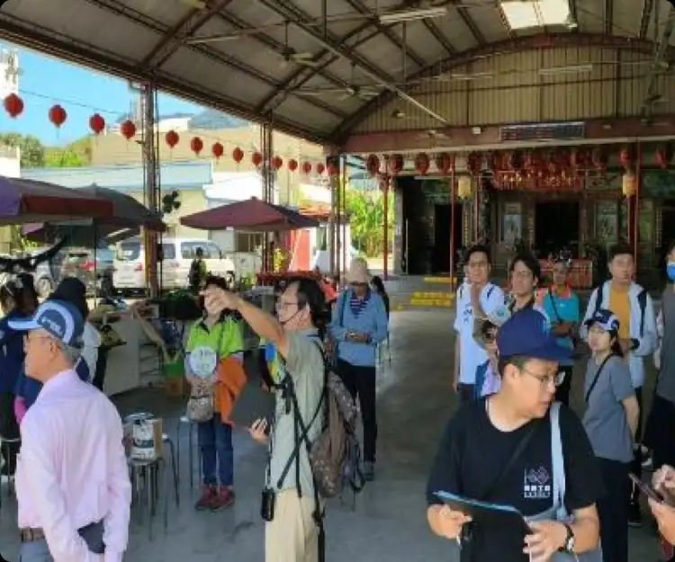
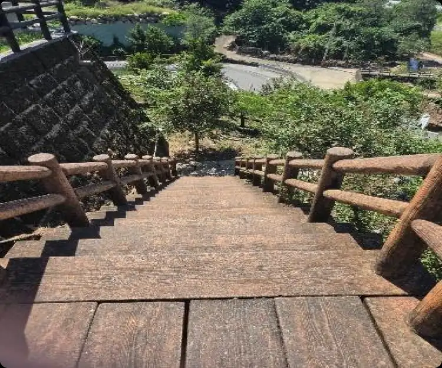
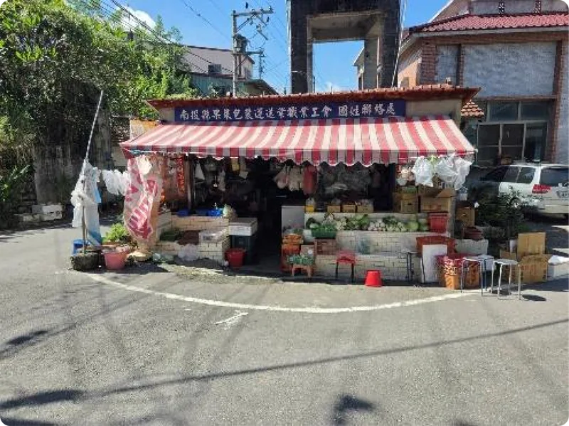
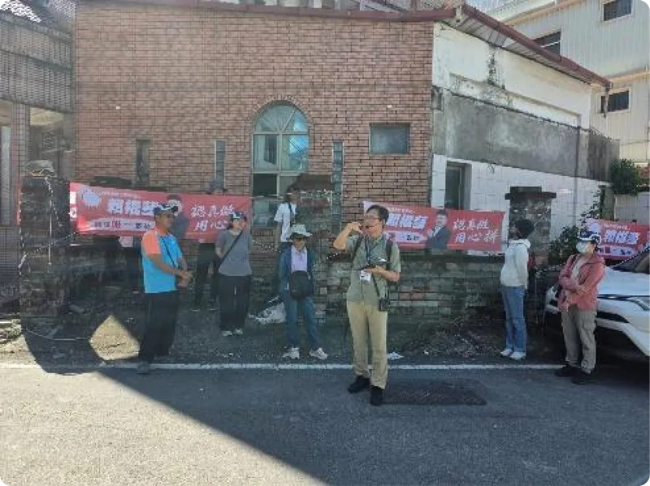
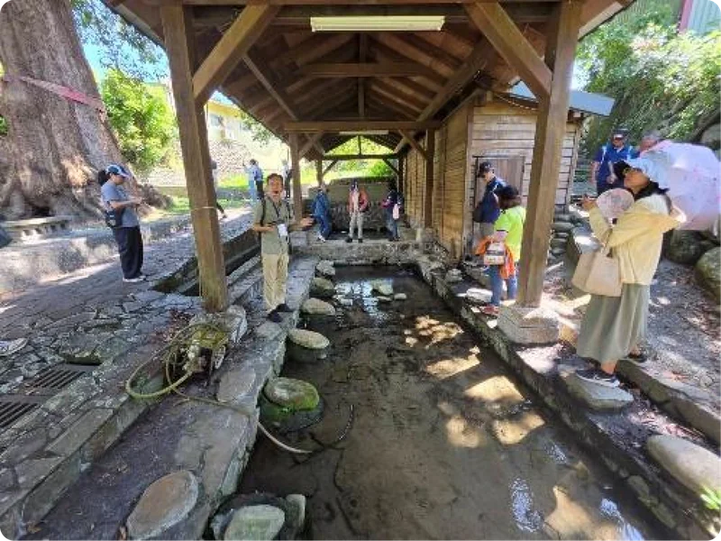
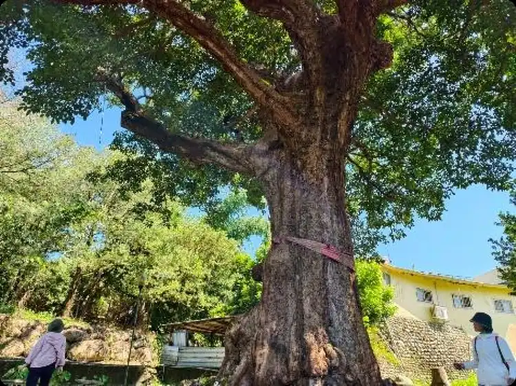
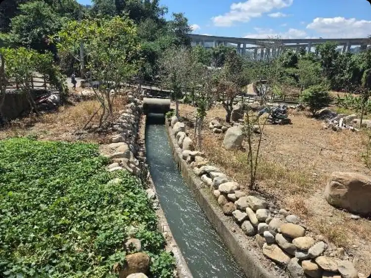
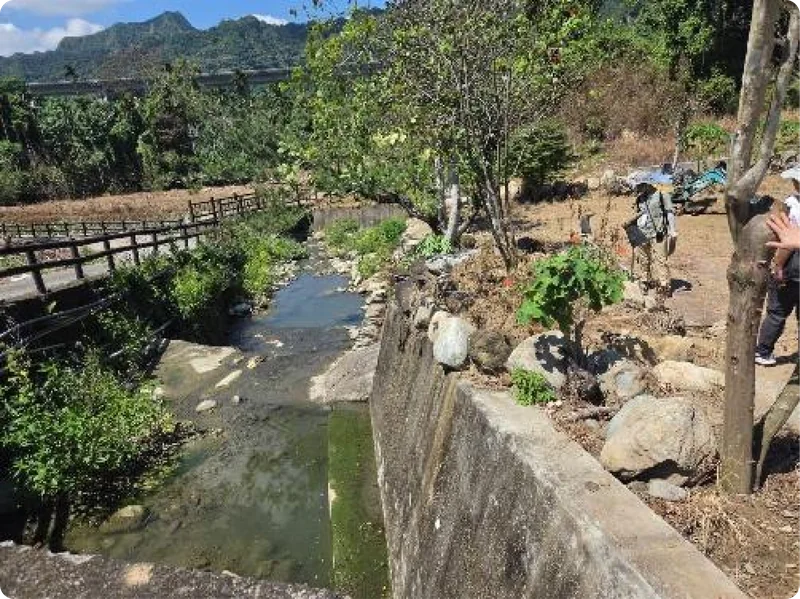
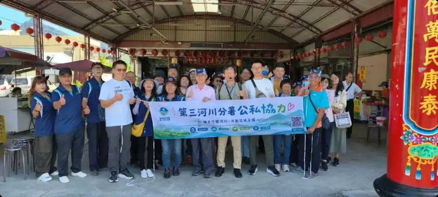

龜蛇交織的地方信仰
北玄宮
北玄宮主祀玄天上帝，而傳統玄武信仰具有龜、蛇的象徵意涵。
福龜周邊的龜形地景、蛇脈步道與烏龜池，也與地方信仰形成有趣的連結。
在南投縣國姓鄉，有一處緊鄰烏溪的聚落——福龜，舊稱「龜仔頭」。
這一次，讓我們循著水的方向，走進福龜，重新認識烏溪流域的人文記憶。
這裡不只是依山傍水的村落，更是早期人群往返埔里、農產運輸及水資源利用的重要地方。從昔日的河床地形、通往埔里的古道，到曾經繁華的香蕉集散街區，以及將烏溪水送往下游農田的龍泉圳，每一處地景都藏著人與河川共同生活的故事。
在公路尚未出現的年代，烏溪沿岸可是人們往返埔里的重要通道！清治時期，中部平埔族群循著烏溪沿線遷移，後來也成為人們運送物資、往返山區的重要路線。隨著河道與地形變遷，早期人們走過的道路，與今天看到的地圖可不完全相同！
走進福龜，沿著北玄宮附近的古道前行，彷彿能想像昔日人們翻越河階、穿梭山間的身影。


如今寧靜的福龜聚落，過去竟有「小香港」的美名！清末至日治時期，隨著往返埔里的交通與香蕉產業興盛，龜仔頭逐漸成為熱鬧的農產集散地。街道上不只有香蕉集貨場、打鐵舖、茶店與旅社，甚至還有撞球間、歌仔戲等娛樂場所，熱鬧程度可見一斑！
後來隨著產業轉型、交通路線改變，昔日繁華逐漸褪去。但走進今日的福龜，彷彿仍能從老街巷弄間，感受到那段人來人往的黃金歲月。



北玄宮主祀玄天上帝，而傳統玄武信仰具有龜、蛇的象徵意涵。
福龜周邊的龜形地景、蛇脈步道與烏龜池，也與地方信仰形成有趣的連結。

烏溪長年沖刷形成的河階地形，孕育出天然湧泉，也成為早期居民珍貴的生活水源。
在沒有自來水的年代，阿嬤們常聚在泉水旁洗衣、聊天，留下充滿人情味的日常回憶。

福龜有一棵充滿故事的茄苳老樹，被當地居民稱為「救命樹」。
相傳第二次世界大戰期間，居民曾在空襲時躲在老樹旁避難，因而留下這個特別的稱呼。歲月流轉，老樹依然靜靜佇立，見證著福龜的歷史變遷。
福龜不只是烏溪沿岸的聚落，更是龍泉圳的重要取水地！
龍泉圳於日治時期興建，依據講師導覽資料，工程自1925年開始，至1928年完工。早期先民巧妙運用地形高差，將烏溪的水引向草屯一帶，灌溉下游農田。這條水圳不僅改善了農業用水，也帶動地方產業發展。如今，沿線留存的水利工程痕跡，仍訴說著昔日人們運用水資源的智慧。


從烏溪孕育的河階地形、歷史古道，到龜仔頭昔日的繁華、天然湧泉與龍泉圳的水利智慧，每一處地景都訴說著人與河川共同生活的故事。
透過本次走讀，第三河川分署結合專業導覽與在地故事，帶領大家重新認識流域的人文歷史與水環境價值，凝聚公私協力、共同守護河川的力量。

循水讀史，沿溪尋根，讓烏溪的故事隨著河水繼續流傳。